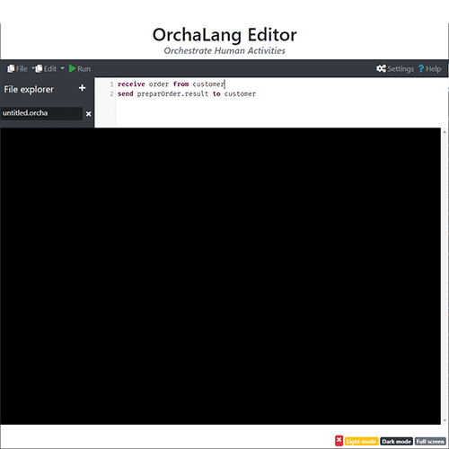

A non-exhaustive list of open-source projects to which I have contributed.

OrchaLang Editor
A cloud-based IDE creates for the modeling and integration language Orcha.
web application angular cli

Clustering4Ever
A Big Data Clustering Library gathering clustering, unsupervized algorithms, and quality indices.
scala spark data science

Break-Out Scala.js
A simple reproduction of the break-out game made with Scala.js library.
scala.js game

The Biggest Scala Cheat Sheet
A big (very big) cheat sheet on the basic notions of scala.
scala cheat sheet notebook

Ant Colony Simulator
A simulation of an intelligent ant colony that search found in their environment.
python simulation metaheuristic

ScalaMaze
A little library that implement some procedural maze generation algorithm in Scala.
scala procedural generation